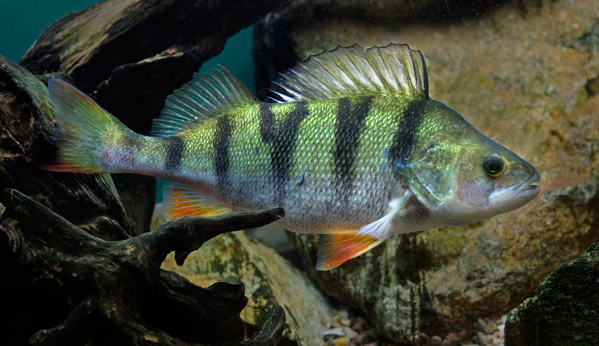
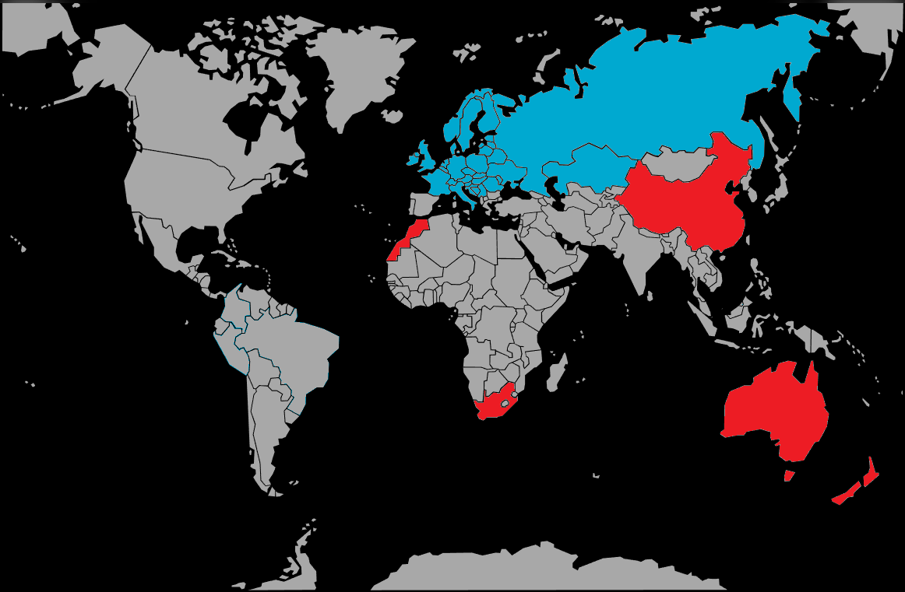

Systématique
- Ordre : Perciformes
- Famille : Percidae
- Genre : Perca
- Espèce : P. fluviatilis
- Auteur : Linnaeus, 1758

Perca fluviatilis, la perche commune ou perche européenne, est un poisson d'eau douce tempérée de grande taille, robuste et carnassier, très populaire en aquaculture et aquariophilie de bassin.
Le corps est fusiforme et assez trapu, plus épais au niveau de la nageoire dorsale antérieure. La tête est petite et conique, la bouche terminale se finissant avant l'œil, dotée de petites dents pointues. L'opercule porte une forte épine biseautée sur son bord postérieur. Les yeux sont proportionnellement gros et mobiles, reflétant une excellente vision.
La coloration de base est verdâtre à brune selon les conditions d'habitat, avec 5 à 8 larges bandes verticales noires ou grises sur les flancs. Le dos est verdâtre foncé, le ventre blanc argenté. Les nageoires pelviennes, pectorales, anale et la partie inférieure de la caudale sont d'un rouge vif à orangé intense. Les deux nageoires dorsales sont juxtaposées, la première présentant des rayons épineux acérés, la seconde des rayons mous.
La taille moyenne en aquarium oscille entre 12 et 25 cm, mais elle peut atteindre 40–50 cm voire 70 cm en conditions optimales en bassin.
La perche commune est un poisson carnassier piscivore très vorace et une redoutable prédatrice. À l'état juvénile, elle chasse en bancs, encerclant les petits poissons blancs et les forçant à s'échapper en bondissant hors de l'eau. À l'âge adulte, elle devient solitaire ou semi-grégaire, chassant plutôt à l'affût, notamment à l'aube et au crépuscule lorsque les proies sont moins méfiantes.
L'espèce demeure très active le jour (diurne) et se repose sur le substrat la nuit. Elle affectionne les eaux oxygénées et fuit les milieux trop chauds. Le cannibalisme est extrêmement fréquent, particulièrement entre les adultes vis-à-vis des juvéniles. Elle peut tolérer de brèves immersions en eau saumâtre (mer Baltique) mais préfère les eaux douces.
Mode : ovipare; la perche pond sur substrat découvert, sans construction de nid. La reproduction débute au printemps (avril–mai en Europe tempérée) lorsque la température de l'eau atteint 7–12 °C. Une période hivernale de froid (4–10 °C) est indispensable pour la maturation des gonades.
Le processus est spectaculaire : la femelle, suivie d'un ou plusieurs mâles, se cambre en forme de U et se déplace en spirale (sens des aiguilles d'une montre) en libérant ses œufs en un unique ruban gélatineux de 1 à 2 mètres de longueur. Les mâles fécondent immédiatement les œufs. Ce ruban peut contenir de 4 000 à 300 000 œufs selon la taille et l'âge de la femelle.
Le ruban est généralement déposé sur des branches, racines, plantes aquatiques ou débris en zone peu profonde. Les œufs sont bien oxygénés par le courant et peu prédatés. L'éclosion intervient après 1 à 3 semaines selon la température. Les larves mesurent 5 mm à la naissance et vivent d'abord sur leurs réserves vitellines. Après 10–12 jours, elles commencent à se nourrir de zooplancton fin (rotifères, daphnies, copépodes). Au bout d'un an, les alevins mesurent 4–6 cm.
La maturité sexuelle intervient vers 2–3 ans pour les mâles et 2–4 ans pour les femelles, lorsqu'elles atteignent 15–25 cm.
Dimorphisme sexuel : peu marqué et difficile à discerner. Les femelles semblent généralement plus trapues et rondes, avec un ventre plus épais, tandis que les mâles sont légèrement plus colorés et affichent une morphologie plus élancée. Aucun caractère externe flagrant ne permet une distinction certaine avant la saison de reproduction.
Espérance de vie : 10 à 15 ans en captivité en conditions optimales, avec un record de 22 ans en nature. La croissance ralentit après le 5ème–6ème année de vie.
Perca fluviatilis fréquente une grande variété de milieux d'eau douce tempérée : rivières à courant lent, ruisseaux, lacs, étangs, gravières et canaux. Elle occupait naturellement les zones littorales végétalisées ou rocheuses propres et bien oxygénées. Elle évite les eaux rapides et froides mais peut les coloniser. Elle affectionne particulièrement les abris offerts par les branches mortes immergées, les souches, les rochers et la végétation aquatique.
L'espèce suit des mouvements saisonniers : en hiver, elle gagne les zones profondes pour réduire son activité; au printemps, elle remonte vers les berges et zones peu profondes pour la reproduction. La profondeur minimale recommandée est 80–120 cm pour les bassins.
Répartition

Origine naturelle :
- Europe occidentale à Sibérie orientale, rivière Kolyma au nord-est.
- Présente naturellement en France, Belgique, Pays-Bas, Allemagne, Scandinavie, Russie et Grande-Bretagne.
- Absente des régions méditerranéennes (Espagne, Italie du sud, Grèce) et du pourtour méditerranéen sud.
- Largement introduite en Australie, Nouvelle-Zélande, Afrique du Sud, Chine, Maroc, Corse (après 1970), causant des impacts écologiques importants (espèce invasive).
L'espèce a été disséminée par les pêcheurs dans les eaux de barrages, gravières, canaux et cours de grandes rivières. Elle s'est établie aussi en eaux saumâtres de la mer Baltique.
Paramètres de maintenance
Température : 4 à 28 °C (tolérance large); optimum 15–20 °C. Besoin obligatoire d'une période hivernale froide (4–10 °C) pour la reproduction.
pH : 7,0 à 7,5 (neutre à légèrement alcalin); l'espèce tolérant des variations.
GH : 8 à 12 °dGH, eau moyennement dure; adaptable.
Courant : modéré à lent; préférence pour les eaux stagnantes à courant faible.
Volume conseillé : minimum 500 L pour un individu adulte; 80–120 cm de profondeur obligatoire pour l'hivernation. Une bonne oxygénation est critique. Substrat de sable fin avec abris rocheux ou branches mortes.
Régime alimentaire
Régime : carnassier piscivore; nourriture vivante, et granulés obligatoire.
En aquarium ou bassin, accepte poissons blancs, petites carpes, alevins, écrevisses, larves d'insectes aquatiques. Nourriture congelée (poissons entiers ou portions, larves de moustiques, vers de vase) largement acceptée mais moins recommandée que les proies vivantes.
Une alimentation variée en proies vivantes ou congelées, distribuée 2–3 fois par semaine en quantités modérées, maintient la condition générale. Attention au suralimentation qui pollue l'eau rapidement.